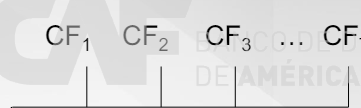
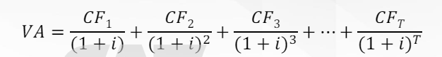
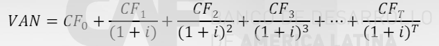
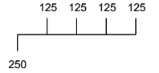
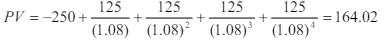
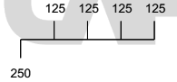
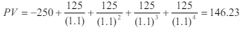

Imaginemos que podemos invertir el dinero y ganar un 10% anual. Un dólar invertido a este tipo de interés se convertiría en 1$ × (1+10%) = $1.1 dentro de un año.
Por lo tanto, para nosotros tener $1.1 dentro de un año sí sería equivalente a tener un dólar hoy. Y la clave de esta comparación de valores en el tiempo es, precisamente, la rentabilidad potencial que podemos obtener, ese 10%.
Podemos entender esta equivalencia también al revés: si necesitas $1 hoy (para consumir) puedes pedirlo prestado, pero entonces tendrás que devolver $1.1 dentro de un año.
Por supuesto, si vamos más allá de un año la conclusión es la misma: $1 invertido hoy al 10% generaría $1 × (1+10%)2 = $1.21 dentro de dos años, y por lo tanto esos dos valores deberían ser equivalentes para nosotros.
En general, una cantidad C hoy es equivalente a C × (1+i) dentro de T años (a esto lo llamamos componer C para hallar su valor futuro) y, al revés, una cantidad C dentro de T años es equivalente a C/(1+i) hoy (a esto lo llamamos actualizar o descontar el flujo de caja C, para hallar su valor actual o descontado).
Practiquemos un poco. Si el tipo de interés es del 5%, ¿cuál es la cantidad equivalente a $200 hoy dentro de un año? ¿Y dentro de tres años? ¿Y dentro de cinco?
La clave para entender el valor del dinero en el tiempo y, por lo tanto, para poder comparar y poner en medidas equivalentes, cantidades que se reciben/pagan en distintos periodos es
La rentabilidad a la que renunciamos en un uso alternativo comparable
Este concepto (equivalente al concepto económico de un coste de oportunidad) será el centro del análisis del valor de cualquier activo / inversión.
Cualquier decisión financiera implica consecuencias de efectivo (a partir de ahora usaremos el término cash-flow para hablar de cualquier movimiento de efectivo) que suceden a lo largo de diversos periodos:
Este valor VA es el precio (máximo) que pagaríamos por el activo hoy y, por lo tanto, representa una valoración del activo "correcta", en el sentido de que suma correctamente los valores de los cash-flows que el activo te da derecho a percibir, ya que utiliza el tipo de interés para descontar (y, por lo tanto, homogeneizar) los cash-flows de distintos periodos.
Esta es la ecuación básica de valoración: todo el análisis de economía financiera se centra en esta ecuación, ya que toda decisión financiera se puede expresar en función de sus consecuencias en términos de cash-flows.
Por ejemplo, el siguiente activo (muy general):
Tendría un valor de:
El concepto de Valor Actual Neto (VAN) es un componente importante del análisis financiero: por ejemplo, las finanzas corporativas se basan fundamentalmente en la aplicación de este concepto a los proyectos de inversión.
Nosotros vamos a definir ahora el concepto, y en la siguiente sesión lo utilizaremos para hablar de los mercados competitivos de activos financieros y de las diferencias entre inversión en activos financieros e inversión en proyectos productivos.
Imaginemos que estamos analizando el valor de un activo que cotiza en un mercado financiero, con lo que podemos observar el precio al que podríamos adquirir el activo.
Vamos a llamar a ese precio CFo: si compráramos hoy el activo, pagaríamos su precio, con lo que tendríamos un cash-flow (negativo) en el momento actual (momento "cero").
Si incluimos este primer pago dentro de la secuencia de cash-flows del activo, aplicando la fórmula de valoración tendríamos una estimación del valor actual del activo neto (descontado) del precio de adquisición.
Así, podemos definir el VAN de la compra de un activo como:
Donde la única diferencia con la ecuación básica es que ahora incluimos el precio del activo (CFo, que será negativo) como parte de la ecuación.
Valora el siguiente “activo”, sabiendo que el tipo de interés es del 8%:
Solución:
Valora el siguiente “activo”, sabiendo que el tipo de interés es del 10%:
Solución:
